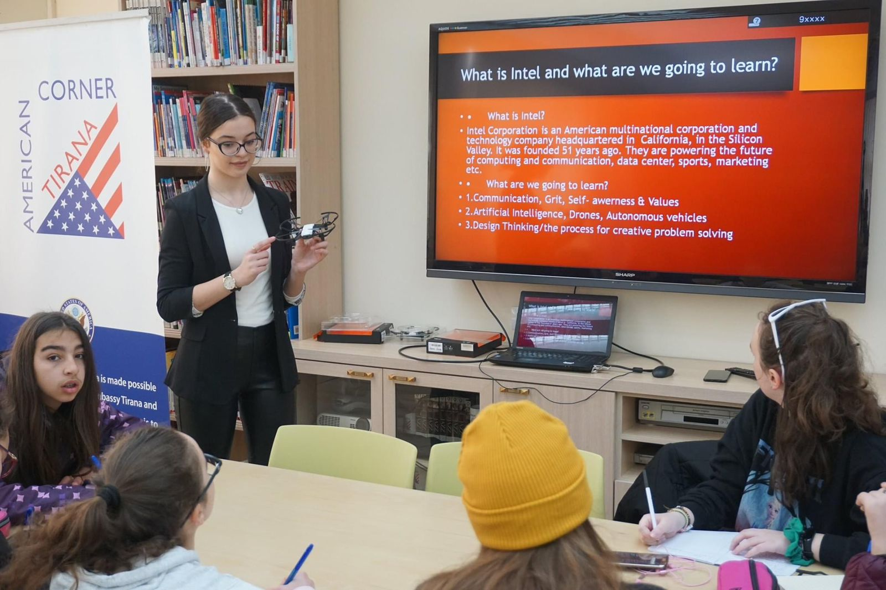

This static website was my first ever project that my friends and I created when I was 12 in a competiton called "CodeLikeAGirl" founded by Vodafone Albania.We created a website where teens could connect to different sportive spaces and reserve a place in a specific time so that they could play. The idea was developed during a time where there was no free playing spaces for youngsters anymore.
MbroAr was a mobile app developed during quarantine for an international competition called Technovation challenge. The purpose of this app was to help shelter homeless kids that are found in different areas all over our city. MbroAr works as a forum where people report every time they see a homeless kid by writing their Id , the location where they found the kid and the app automatically directs it to the closest communitary social center, that can continue to locate and help the kid.
I was one of the 12 representatives of Albania in an interational 14 days all girls STEM camp.There I gained different skills starting from coding drones with python, using Arduinos in litte robots and most importantly presenting my final group project in front of 150 people and 50 representatives from prestigious companies such as "Intel", "Nasa","Microsoft" etc.